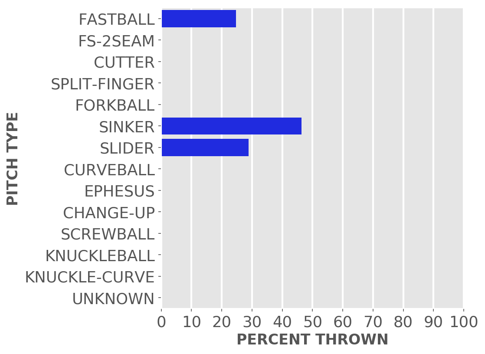
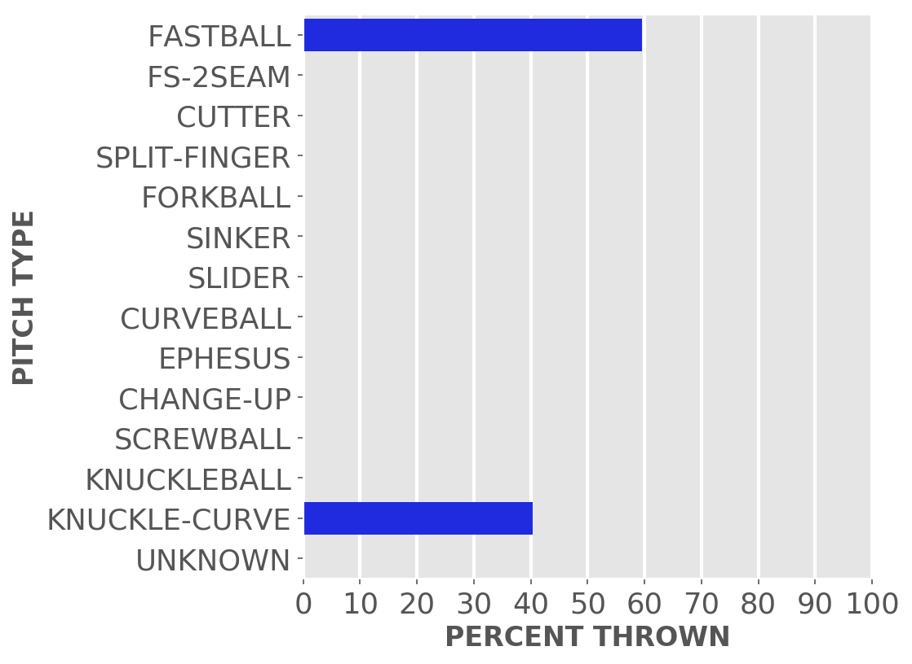
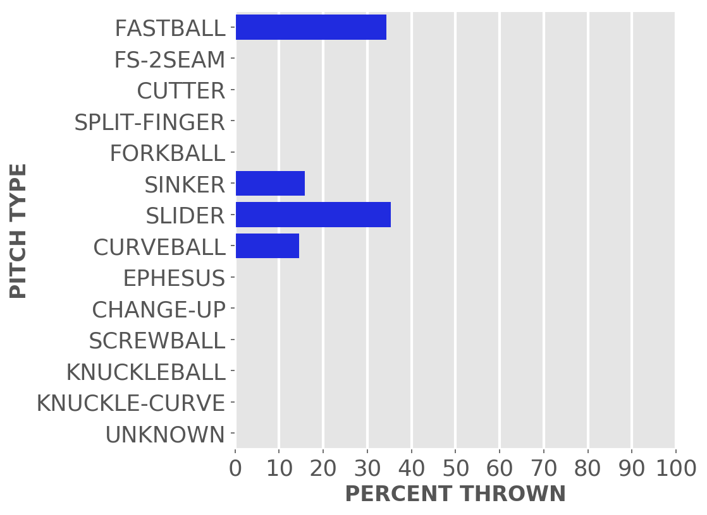

Chicago baseball
Cubs
A little-more-than-casual but not-very-wonky statistical look at the current season
Just enough stats to feed into the anxieties of your typical Cubby fan.
Updated Thursday, May 20, at 8:31 a.m. Pybaseball gathers these from Baseball-reference.com.
Games
JUMP TO TOP | BATTERS | PITCHERS
On Wednesday, May 19, the Cubs lost a night game at home against the Nationals, 3 to 4, in 9 innings. The winning pitcher was Scherzer, losing pitcher was Arrieta. Save: Hand.
Next scheduled game: Thursday, May 20, a game at home with the Nationals.
Summary results by team
| Team | Wins | Loses | Avg. Cubs runs | Avg. runs against |
|---|---|---|---|---|
| Braves | 2 | 5 | 5.0 | 6.86 |
| Brewers | 3 | 6 | 3.44 | 4.22 |
| Dodgers | 3 | 0 | 5.67 | 3.0 |
| Indians | 0 | 2 | 1.5 | 2.5 |
| Mets | 3 | 0 | 7.67 | 2.67 |
| Nationals | 2 | 1 | 5.33 | 3.33 |
| Pirates | 5 | 4 | 3.33 | 4.0 |
| Reds | 1 | 2 | 7.0 | 7.67 |
| Tigers | 2 | 1 | 5.67 | 4.0 |
Batters
JUMP TO TOP | GAMES | PITCHERS
Click the link under a player's name to get up-to-speed on a player at bat.
Adbert Alzolay #73, P
| Status (A = active) | A |
| Bats/Throws | R/R |
| Plate appearances | 10 |
| At bats | 10 |
| Hits | 1 |
| Home runs | 0 |
| Batting Avg. | 0.1 |

| Runs | 1 |
| RBI | 0 |
| On-base percent | 0.1 |
| Weighted OBP | 0.089 |
| Slugging % | 0.1 |
| Stolen bases | 0 |
| Caught stealing | 0 |
Other measures
| Weighted runs above avg. (wRAA) | -1.8 |
| Runs Above Replacement (RAR) | -0.3 |
| Fielding RAR | |
| Wins above replacement (WAR) | 0.0 |
Jake Arrieta #49, P
| Status (A = active) | A |
| Bats/Throws | R/R |
| Plate appearances | 13 |
| At bats | 11 |
| Hits | 1 |
| Home runs | 0 |
| Batting Avg. | 0.091 |

| Runs | 0 |
| RBI | 0 |
| On-base percent | 0.167 |
| Weighted OBP | 0.131 |
| Slugging % | 0.091 |
| Stolen bases | 0 |
| Caught stealing | 0 |
Other measures
| Weighted runs above avg. (wRAA) | -1.8 |
| Runs Above Replacement (RAR) | 0.0 |
| Fielding RAR | |
| Wins above replacement (WAR) | 0.0 |
Javier Baez #9, SS
| Status (A = active) | A |
| Bats/Throws | R/R |
| Plate appearances | 148 |
| At bats | 137 |
| Hits | 36 |
| Home runs | 10 |
| Batting Avg. | 0.263 |

| Runs | 22 |
| RBI | 28 |
| On-base percent | 0.299 |
| Weighted OBP | 0.348 |
| Slugging % | 0.526 |
| Stolen bases | 6 |
| Caught stealing | 1 |
Other measures
| Weighted runs above avg. (wRAA) | 4.6 |
| Runs Above Replacement (RAR) | 11.7 |
| Fielding RAR | -1.1 |
| Wins above replacement (WAR) | 1.2 |
David Bote #13, 2B
| Status (A = active) | A |
| Bats/Throws | R/R |
| Plate appearances | 131 |
| At bats | 117 |
| Hits | 23 |
| Home runs | 3 |
| Batting Avg. | 0.197 |

| Runs | 11 |
| RBI | 18 |
| On-base percent | 0.269 |
| Weighted OBP | 0.263 |
| Slugging % | 0.316 |
| Stolen bases | 0 |
| Caught stealing | 1 |
Other measures
| Weighted runs above avg. (wRAA) | -4.9 |
| Runs Above Replacement (RAR) | -2.3 |
| Fielding RAR | 0.3 |
| Wins above replacement (WAR) | -0.2 |
Kris Bryant #17, 3B
| Status (A = active) | A |
| Bats/Throws | R/R |
| Plate appearances | 167 |
| At bats | 143 |
| Hits | 44 |
| Home runs | 10 |
| Batting Avg. | 0.308 |

| Runs | 31 |
| RBI | 26 |
| On-base percent | 0.401 |
| Weighted OBP | 0.429 |
| Slugging % | 0.615 |
| Stolen bases | 2 |
| Caught stealing | 1 |
Other measures
| Weighted runs above avg. (wRAA) | 16.0 |
| Runs Above Replacement (RAR) | 21.5 |
| Fielding RAR | 0.0 |
| Wins above replacement (WAR) | 2.2 |
Willson Contreras #40, C
| Status (A = active) | A |
| Bats/Throws | R/R |
| Plate appearances | 152 |
| At bats | 130 |
| Hits | 33 |
| Home runs | 8 |
| Batting Avg. | 0.254 |

| Runs | 21 |
| RBI | 21 |
| On-base percent | 0.349 |
| Weighted OBP | 0.351 |
| Slugging % | 0.462 |
| Stolen bases | 2 |
| Caught stealing | 2 |
Other measures
| Weighted runs above avg. (wRAA) | 5.1 |
| Runs Above Replacement (RAR) | 9.5 |
| Fielding RAR | -2.2 |
| Wins above replacement (WAR) | 1.0 |
Zach Davies #27, P
| Status (A = active) | A |
| Bats/Throws | R/R |
| Plate appearances | 11 |
| At bats | 6 |
| Hits | 1 |
| Home runs | 0 |
| Batting Avg. | 0.167 |

| Runs | 1 |
| RBI | 1 |
| On-base percent | 0.167 |
| Weighted OBP | 0.148 |
| Slugging % | 0.167 |
| Stolen bases | 0 |
| Caught stealing | 0 |
Other measures
| Weighted runs above avg. (wRAA) | -1.4 |
| Runs Above Replacement (RAR) | 0.2 |
| Fielding RAR | |
| Wins above replacement (WAR) | 0.0 |
Matt Duffy #5, 3B
| Status (A = active) | A |
| Bats/Throws | R/R |
| Plate appearances | 104 |
| At bats | 89 |
| Hits | 25 |
| Home runs | 1 |
| Batting Avg. | 0.281 |

| Runs | 16 |
| RBI | 12 |
| On-base percent | 0.375 |
| Weighted OBP | 0.333 |
| Slugging % | 0.36 |
| Stolen bases | 3 |
| Caught stealing | 0 |
Other measures
| Weighted runs above avg. (wRAA) | 1.9 |
| Runs Above Replacement (RAR) | 5.1 |
| Fielding RAR | 1.0 |
| Wins above replacement (WAR) | 0.5 |
Ian Happ #8, CF
| Status (A = active) | A |
| Bats/Throws | S/R |
| Plate appearances | 122 |
| At bats | 103 |
| Hits | 20 |
| Home runs | 4 |
| Batting Avg. | 0.194 |
| Runs | 12 |
| RBI | 8 |
| On-base percent | 0.314 |
| Weighted OBP | 0.298 |
| Slugging % | 0.34 |
| Stolen bases | 1 |
| Caught stealing | 1 |
Other measures
| Weighted runs above avg. (wRAA) | -1.1 |
| Runs Above Replacement (RAR) | 1.0 |
| Fielding RAR | -1.6 |
| Wins above replacement (WAR) | 0.1 |
Kyle Hendricks #28, P
| Status (A = active) | A |
| Bats/Throws | R/R |
| Plate appearances | 11 |
| At bats | 10 |
| Hits | 0 |
| Home runs | 0 |
| Batting Avg. | 0.0 |
| Runs | 0 |
| RBI | 0 |
| On-base percent | 0.0 |
| Weighted OBP | 0.0 |
| Slugging % | 0.0 |
| Stolen bases | 0 |
| Caught stealing | 0 |
Other measures
| Weighted runs above avg. (wRAA) | -2.7 |
| Runs Above Replacement (RAR) | -1.1 |
| Fielding RAR | |
| Wins above replacement (WAR) | -0.1 |
Jason Heyward #22, RF
| Status (A = active) | A |
| Bats/Throws | L/L |
| Plate appearances | 138 |
| At bats | 126 |
| Hits | 23 |
| Home runs | 4 |
| Batting Avg. | 0.183 |

| Runs | 15 |
| RBI | 13 |
| On-base percent | 0.254 |
| Weighted OBP | 0.263 |
| Slugging % | 0.341 |
| Stolen bases | 3 |
| Caught stealing | 0 |
Other measures
| Weighted runs above avg. (wRAA) | -5.1 |
| Runs Above Replacement (RAR) | 0.5 |
| Fielding RAR | 2.6 |
| Wins above replacement (WAR) | 0.0 |
P.J. Higgins #20, C
| Status (A = active) | A |
| Bats/Throws | R/R |
| Plate appearances | 3 |
| At bats | 3 |
| Hits | 0 |
| Home runs | 0 |
| Batting Avg. | 0.0 |

| Runs | 0 |
| RBI | 0 |
| On-base percent | 0.0 |
| Weighted OBP | 0.0 |
| Slugging % | 0.0 |
| Stolen bases | 0 |
| Caught stealing | 0 |
Other measures
| Weighted runs above avg. (wRAA) | -0.7 |
| Runs Above Replacement (RAR) | -0.7 |
| Fielding RAR | |
| Wins above replacement (WAR) | -0.1 |
Nico Hoerner #2, 2B
| Status (A = active) | A |
| Bats/Throws | R/R |
| Plate appearances | 64 |
| At bats | 55 |
| Hits | 19 |
| Home runs | 0 |
| Batting Avg. | 0.345 |

| Runs | 6 |
| RBI | 9 |
| On-base percent | 0.422 |
| Weighted OBP | 0.375 |
| Slugging % | 0.455 |
| Stolen bases | 3 |
| Caught stealing | 1 |
Other measures
| Weighted runs above avg. (wRAA) | 3.3 |
| Runs Above Replacement (RAR) | 5.0 |
| Fielding RAR | -0.6 |
| Wins above replacement (WAR) | 0.5 |
Jake Marisnick #6, CF
| Status (A = active) | D10 |
| Bats/Throws | R/R |
| Plate appearances | 60 |
| At bats | 53 |
| Hits | 14 |
| Home runs | 4 |
| Batting Avg. | 0.264 |

| Runs | 11 |
| RBI | 14 |
| On-base percent | 0.35 |
| Weighted OBP | 0.409 |
| Slugging % | 0.623 |
| Stolen bases | 2 |
| Caught stealing | 1 |
Other measures
| Weighted runs above avg. (wRAA) | 4.8 |
| Runs Above Replacement (RAR) | 4.6 |
| Fielding RAR | -2.7 |
| Wins above replacement (WAR) | 0.5 |
Alec Mills #30, P
| Status (A = active) | D10 |
| Bats/Throws | R/R |
| Plate appearances | 5 |
| At bats | 5 |
| Hits | 0 |
| Home runs | 0 |
| Batting Avg. | 0.0 |
| Runs | 0 |
| RBI | 0 |
| On-base percent | 0.0 |
| Weighted OBP | 0.0 |
| Slugging % | 0.0 |
| Stolen bases | 0 |
| Caught stealing | 0 |
Other measures
| Weighted runs above avg. (wRAA) | -1.2 |
| Runs Above Replacement (RAR) | -0.5 |
| Fielding RAR | |
| Wins above replacement (WAR) | -0.1 |
Joc Pederson #24, LF
| Status (A = active) | A |
| Bats/Throws | L/L |
| Plate appearances | 111 |
| At bats | 96 |
| Hits | 25 |
| Home runs | 1 |
| Batting Avg. | 0.26 |

| Runs | 9 |
| RBI | 9 |
| On-base percent | 0.342 |
| Weighted OBP | 0.311 |
| Slugging % | 0.354 |
| Stolen bases | 0 |
| Caught stealing | 2 |
Other measures
| Weighted runs above avg. (wRAA) | 0.2 |
| Runs Above Replacement (RAR) | -1.6 |
| Fielding RAR | -3.5 |
| Wins above replacement (WAR) | -0.2 |
Anthony Rizzo #44, 1B
| Status (A = active) | A |
| Bats/Throws | L/L |
| Plate appearances | 169 |
| At bats | 140 |
| Hits | 35 |
| Home runs | 5 |
| Batting Avg. | 0.25 |

| Runs | 20 |
| RBI | 16 |
| On-base percent | 0.361 |
| Weighted OBP | 0.349 |
| Slugging % | 0.443 |
| Stolen bases | 3 |
| Caught stealing | 0 |
Other measures
| Weighted runs above avg. (wRAA) | 5.3 |
| Runs Above Replacement (RAR) | 8.4 |
| Fielding RAR | 1.0 |
| Wins above replacement (WAR) | 0.9 |
Eric Sogard #4, 2B
| Status (A = active) | A |
| Bats/Throws | L/R |
| Plate appearances | 76 |
| At bats | 69 |
| Hits | 17 |
| Home runs | 1 |
| Batting Avg. | 0.246 |

| Runs | 9 |
| RBI | 7 |
| On-base percent | 0.289 |
| Weighted OBP | 0.268 |
| Slugging % | 0.333 |
| Stolen bases | 2 |
| Caught stealing | 0 |
Other measures
| Weighted runs above avg. (wRAA) | -2.5 |
| Runs Above Replacement (RAR) | -0.9 |
| Fielding RAR | -0.8 |
| Wins above replacement (WAR) | -0.1 |
Keegan Thompson #71, P
| Status (A = active) | A |
| Bats/Throws | R/R |
| Plate appearances | 3 |
| At bats | 3 |
| Hits | 1 |
| Home runs | 0 |
| Batting Avg. | 0.333 |
| Runs | 0 |
| RBI | 0 |
| On-base percent | 0.333 |
| Weighted OBP | 0.295 |
| Slugging % | 0.333 |
| Stolen bases | 0 |
| Caught stealing | 0 |
Other measures
| Weighted runs above avg. (wRAA) | 0.0 |
| Runs Above Replacement (RAR) | 0.4 |
| Fielding RAR | |
| Wins above replacement (WAR) | 0.0 |
Trevor Williams #32, P
| Status (A = active) | A |
| Bats/Throws | R/R |
| Plate appearances | 10 |
| At bats | 8 |
| Hits | 1 |
| Home runs | 0 |
| Batting Avg. | 0.125 |

| Runs | 1 |
| RBI | 1 |
| On-base percent | 0.222 |
| Weighted OBP | 0.175 |
| Slugging % | 0.125 |
| Stolen bases | 0 |
| Caught stealing | 0 |
Other measures
| Weighted runs above avg. (wRAA) | -1.1 |
| Runs Above Replacement (RAR) | 0.4 |
| Fielding RAR | |
| Wins above replacement (WAR) | 0.0 |
Pitchers
Click the link under a player's name to get acquainted with who's on the mound.Click here for a description of these stats and more.
Adbert Alzolay #73, P
| Status (A = active) | A |
| Bats/Throws | R/R |
| Wins | 2 |
| Losses | 3 |
| ERA | 4.62 |
| Caught stealing | 7 |
| Complete games | 0 |
| Shutouts | 0 |
| Saves | 0 |
| Blown saves | 0 |
Pitch types

Fastball = Four Seam and Unclassified Fastballs; FS-2seam = Two Seam Fastballs; Ephesuses are a really slow ball
| Average innings pitched | 5.3 |
| Strikeouts per 9 innings | 9.49 |
| Walks per 9 innings | 1.7 |
| Walks, hits per inning (WHIP) | 0.89 |
| Percent left on base | 67.2 |
| Percent first pitch strike | 62.7 |
Other measures
| Avg. run support | 19.0 |
| Opponents batting average | 0.195 |
| Batting avg. on balls in play | 0.209 |
| Fielding independent pitching | 4.57 |
| Win probability added (WPA) | 0.16 |
| Runs above replacement | 2.9 |
| WAR | 0.3 |
Jake Arrieta #49, P
| Status (A = active) | A |
| Bats/Throws | R/R |
| Wins | 4 |
| Losses | 4 |
| ERA | 4.46 |
| Caught stealing | 8 |
| Complete games | 0 |
| Shutouts | 0 |
| Saves | 0 |
| Blown saves | 0 |
Pitch types

Fastball = Four Seam and Unclassified Fastballs; FS-2seam = Two Seam Fastballs; Ephesuses are a really slow ball
| Average innings pitched | 5.3 |
| Strikeouts per 9 innings | 6.59 |
| Walks per 9 innings | 3.19 |
| Walks, hits per inning (WHIP) | 1.3 |
| Percent left on base | 78.1 |
| Percent first pitch strike | 51.4 |
Other measures
| Avg. run support | 18.0 |
| Opponents batting average | 0.245 |
| Batting avg. on balls in play | 0.258 |
| Fielding independent pitching | 5.26 |
| Win probability added (WPA) | 0.06 |
| Runs above replacement | -0.2 |
| WAR | 0.0 |
Rex Brothers #48, P
| Status (A = active) | A |
| Bats/Throws | L/L |
| Wins | 1 |
| Losses | 0 |
| ERA | 3.0 |
| Caught stealing | 0 |
| Complete games | 0 |
| Shutouts | 0 |
| Saves | 1 |
| Blown saves | 0 |
Pitch types

Fastball = Four Seam and Unclassified Fastballs; FS-2seam = Two Seam Fastballs; Ephesuses are a really slow ball
| Average innings pitched | 0.8 |
| Strikeouts per 9 innings | 16.2 |
| Walks per 9 innings | 4.8 |
| Walks, hits per inning (WHIP) | 1.27 |
| Percent left on base | 82.5 |
| Percent first pitch strike | 53.0 |
Other measures
| Avg. run support | 4.0 |
| Opponents batting average | 0.2 |
| Batting avg. on balls in play | 0.37 |
| Fielding independent pitching | 2.6 |
| Win probability added (WPA) | 0.26 |
| Runs above replacement | 2.9 |
| WAR | 0.3 |
Andrew Chafin #39, P
| Status (A = active) | A |
| Bats/Throws | R/L |
| Wins | 0 |
| Losses | 1 |
| ERA | 2.7 |
| Caught stealing | 0 |
| Complete games | 0 |
| Shutouts | 0 |
| Saves | 0 |
| Blown saves | 1 |
Pitch types
Fastball = Four Seam and Unclassified Fastballs; FS-2seam = Two Seam Fastballs; Ephesuses are a really slow ball
| Average innings pitched | 1.0 |
| Strikeouts per 9 innings | 9.45 |
| Walks per 9 innings | 3.6 |
| Walks, hits per inning (WHIP) | 0.95 |
| Percent left on base | 76.5 |
| Percent first pitch strike | 65.4 |
Other measures
| Avg. run support | 3.0 |
| Opponents batting average | 0.155 |
| Batting avg. on balls in play | 0.204 |
| Fielding independent pitching | 3.18 |
| Win probability added (WPA) | 0.74 |
| Runs above replacement | 2.8 |
| WAR | 0.3 |
Zach Davies #27, P
| Status (A = active) | A |
| Bats/Throws | R/R |
| Wins | 2 |
| Losses | 2 |
| ERA | 5.58 |
| Caught stealing | 9 |
| Complete games | 0 |
| Shutouts | 0 |
| Saves | 0 |
| Blown saves | 0 |
Pitch types

Fastball = Four Seam and Unclassified Fastballs; FS-2seam = Two Seam Fastballs; Ephesuses are a really slow ball
| Average innings pitched | 4.5 |
| Strikeouts per 9 innings | 5.13 |
| Walks per 9 innings | 4.91 |
| Walks, hits per inning (WHIP) | 1.74 |
| Percent left on base | 70.2 |
| Percent first pitch strike | 55.0 |
Other measures
| Avg. run support | 25.0 |
| Opponents batting average | 0.291 |
| Batting avg. on balls in play | 0.319 |
| Fielding independent pitching | 5.22 |
| Win probability added (WPA) | -0.95 |
| Runs above replacement | -0.1 |
| WAR | 0.0 |
Kyle Hendricks #28, P
| Status (A = active) | A |
| Bats/Throws | R/R |
| Wins | 3 |
| Losses | 4 |
| ERA | 5.27 |
| Caught stealing | 8 |
| Complete games | 1 |
| Shutouts | 0 |
| Saves | 0 |
| Blown saves | 0 |
Pitch types

Fastball = Four Seam and Unclassified Fastballs; FS-2seam = Two Seam Fastballs; Ephesuses are a really slow ball
| Average innings pitched | 5.3 |
| Strikeouts per 9 innings | 8.02 |
| Walks per 9 innings | 2.11 |
| Walks, hits per inning (WHIP) | 1.55 |
| Percent left on base | 78.4 |
| Percent first pitch strike | 72.3 |
Other measures
| Avg. run support | 34.0 |
| Opponents batting average | 0.308 |
| Batting avg. on balls in play | 0.338 |
| Fielding independent pitching | 5.62 |
| Win probability added (WPA) | -0.44 |
| Runs above replacement | -2.5 |
| WAR | -0.2 |
Craig Kimbrel #46, P
| Status (A = active) | A |
| Bats/Throws | R/R |
| Wins | 0 |
| Losses | 2 |
| ERA | 1.08 |
| Caught stealing | 0 |
| Complete games | 0 |
| Shutouts | 0 |
| Saves | 8 |
| Blown saves | 2 |
Pitch types
Fastball = Four Seam and Unclassified Fastballs; FS-2seam = Two Seam Fastballs; Ephesuses are a really slow ball
| Average innings pitched | 1.0 |
| Strikeouts per 9 innings | 14.58 |
| Walks per 9 innings | 3.78 |
| Walks, hits per inning (WHIP) | 0.84 |
| Percent left on base | 79.4 |
| Percent first pitch strike | 67.7 |
Other measures
| Avg. run support | 0.0 |
| Opponents batting average | 0.121 |
| Batting avg. on balls in play | 0.2 |
| Fielding independent pitching | 1.93 |
| Win probability added (WPA) | 0.87 |
| Runs above replacement | 7.3 |
| WAR | 0.8 |
Dillon Maples #36, P
| Status (A = active) | A |
| Bats/Throws | R/R |
| Wins | 0 |
| Losses | 0 |
| ERA | 1.72 |
| Caught stealing | 0 |
| Complete games | 0 |
| Shutouts | 0 |
| Saves | 0 |
| Blown saves | 0 |
Pitch types
Fastball = Four Seam and Unclassified Fastballs; FS-2seam = Two Seam Fastballs; Ephesuses are a really slow ball
| Average innings pitched | 1.3 |
| Strikeouts per 9 innings | 14.36 |
| Walks per 9 innings | 5.74 |
| Walks, hits per inning (WHIP) | 1.02 |
| Percent left on base | 92.6 |
| Percent first pitch strike | 55.4 |
Other measures
| Avg. run support | 7.0 |
| Opponents batting average | 0.115 |
| Batting avg. on balls in play | 0.16 |
| Fielding independent pitching | 4.09 |
| Win probability added (WPA) | -0.04 |
| Runs above replacement | 0.1 |
| WAR | 0.0 |
Trevor Megill #74, P
| Status (A = active) | D10 |
| Bats/Throws | L/R |
| Wins | 0 |
| Losses | 0 |
| ERA | 0.0 |
| Caught stealing | 0 |
| Complete games | 0 |
| Shutouts | 0 |
| Saves | 0 |
| Blown saves | 0 |
Pitch types

Fastball = Four Seam and Unclassified Fastballs; FS-2seam = Two Seam Fastballs; Ephesuses are a really slow ball
| Average innings pitched | 1.0 |
| Strikeouts per 9 innings | 9.0 |
| Walks per 9 innings | 4.5 |
| Walks, hits per inning (WHIP) | 1.5 |
| Percent left on base | 100.0 |
| Percent first pitch strike | 44.4 |
Other measures
| Avg. run support | 3.0 |
| Opponents batting average | 0.25 |
| Batting avg. on balls in play | 0.333 |
| Fielding independent pitching | 2.63 |
| Win probability added (WPA) | 0.03 |
| Runs above replacement | 0.2 |
| WAR | 0.0 |
Shelby Miller #29, P
| Status (A = active) | D10 |
| Bats/Throws | R/R |
| Wins | 0 |
| Losses | 0 |
| ERA | 31.5 |
| Caught stealing | 0 |
| Complete games | 0 |
| Shutouts | 0 |
| Saves | 0 |
| Blown saves | 0 |
Pitch types

Fastball = Four Seam and Unclassified Fastballs; FS-2seam = Two Seam Fastballs; Ephesuses are a really slow ball
| Average innings pitched | 0.7 |
| Strikeouts per 9 innings | 4.5 |
| Walks per 9 innings | 22.5 |
| Walks, hits per inning (WHIP) | 6.0 |
| Percent left on base | 41.7 |
| Percent first pitch strike | 33.3 |
Other measures
| Avg. run support | 0.0 |
| Opponents batting average | 0.538 |
| Batting avg. on balls in play | 0.583 |
| Fielding independent pitching | 9.63 |
| Win probability added (WPA) | -0.07 |
| Runs above replacement | -0.7 |
| WAR | -0.1 |
Alec Mills #30, P
| Status (A = active) | D10 |
| Bats/Throws | R/R |
| Wins | 2 |
| Losses | 0 |
| ERA | 5.96 |
| Caught stealing | 1 |
| Complete games | 0 |
| Shutouts | 0 |
| Saves | 1 |
| Blown saves | 0 |
Pitch types

Fastball = Four Seam and Unclassified Fastballs; FS-2seam = Two Seam Fastballs; Ephesuses are a really slow ball
| Average innings pitched | 1.8 |
| Strikeouts per 9 innings | 5.16 |
| Walks per 9 innings | 3.18 |
| Walks, hits per inning (WHIP) | 1.46 |
| Percent left on base | 63.7 |
| Percent first pitch strike | 52.0 |
Other measures
| Avg. run support | 12.0 |
| Opponents batting average | 0.278 |
| Batting avg. on balls in play | 0.288 |
| Fielding independent pitching | 5.87 |
| Win probability added (WPA) | -0.64 |
| Runs above replacement | -3.6 |
| WAR | -0.4 |
Tommy Nance #45, P
| Status (A = active) | A |
| Bats/Throws | R/R |
| Wins | 0 |
| Losses | 0 |
| ERA | 0.0 |
| Caught stealing | 0 |
| Complete games | 0 |
| Shutouts | 0 |
| Saves | 0 |
| Blown saves | 0 |
Pitch types
Fastball = Four Seam and Unclassified Fastballs; FS-2seam = Two Seam Fastballs; Ephesuses are a really slow ball
| Average innings pitched | 1.0 |
| Strikeouts per 9 innings | 15.43 |
| Walks per 9 innings | 0.0 |
| Walks, hits per inning (WHIP) | 0.0 |
| Percent left on base | 100.0 |
| Percent first pitch strike | 100.0 |
Other measures
| Avg. run support | 0.0 |
| Opponents batting average | 0.0 |
| Batting avg. on balls in play | 0.0 |
| Fielding independent pitching | -0.29 |
| Win probability added (WPA) | 0.06 |
| Runs above replacement | 0.8 |
| WAR | 0.1 |
Eric Sogard #4, 2B
| Status (A = active) | A |
| Bats/Throws | L/R |
| Wins | 0 |
| Losses | 0 |
| ERA | 0.0 |
| Caught stealing | 0 |
| Complete games | 0 |
| Shutouts | 0 |
| Saves | 0 |
| Blown saves | 0 |
Pitch types

Fastball = Four Seam and Unclassified Fastballs; FS-2seam = Two Seam Fastballs; Ephesuses are a really slow ball
| Average innings pitched | 1.0 |
| Strikeouts per 9 innings | 0.0 |
| Walks per 9 innings | 0.0 |
| Walks, hits per inning (WHIP) | 2.0 |
| Percent left on base | 100.0 |
| Percent first pitch strike | 33.3 |
Other measures
| Avg. run support | 0.0 |
| Opponents batting average | 0.4 |
| Batting avg. on balls in play | 0.4 |
| Fielding independent pitching | 6.13 |
| Win probability added (WPA) | 0.0 |
| Runs above replacement | -0.1 |
| WAR | 0.0 |
Justin Steele #35, P
| Status (A = active) | A |
| Bats/Throws | L/L |
| Wins | 1 |
| Losses | 0 |
| ERA | 2.25 |
| Caught stealing | 0 |
| Complete games | 0 |
| Shutouts | 0 |
| Saves | 0 |
| Blown saves | 0 |
Pitch types

Fastball = Four Seam and Unclassified Fastballs; FS-2seam = Two Seam Fastballs; Ephesuses are a really slow ball
| Average innings pitched | 1.2 |
| Strikeouts per 9 innings | 13.5 |
| Walks per 9 innings | 4.5 |
| Walks, hits per inning (WHIP) | 1.08 |
| Percent left on base | 90.2 |
| Percent first pitch strike | 49.0 |
Other measures
| Avg. run support | 10.0 |
| Opponents batting average | 0.163 |
| Batting avg. on balls in play | 0.217 |
| Fielding independent pitching | 4.3 |
| Win probability added (WPA) | 0.62 |
| Runs above replacement | -0.4 |
| WAR | 0.0 |
Ryan Tepera #18, P
| Status (A = active) | A |
| Bats/Throws | R/R |
| Wins | 0 |
| Losses | 0 |
| ERA | 3.26 |
| Caught stealing | 0 |
| Complete games | 0 |
| Shutouts | 0 |
| Saves | 0 |
| Blown saves | 2 |
Pitch types

Fastball = Four Seam and Unclassified Fastballs; FS-2seam = Two Seam Fastballs; Ephesuses are a really slow ball
| Average innings pitched | 1.0 |
| Strikeouts per 9 innings | 8.84 |
| Walks per 9 innings | 2.33 |
| Walks, hits per inning (WHIP) | 0.88 |
| Percent left on base | 74.1 |
| Percent first pitch strike | 64.9 |
Other measures
| Avg. run support | 6.0 |
| Opponents batting average | 0.179 |
| Batting avg. on balls in play | 0.217 |
| Fielding independent pitching | 3.6 |
| Win probability added (WPA) | 0.77 |
| Runs above replacement | 1.7 |
| WAR | 0.2 |
Keegan Thompson #71, P
| Status (A = active) | A |
| Bats/Throws | R/R |
| Wins | 2 |
| Losses | 1 |
| ERA | 0.0 |
| Caught stealing | 1 |
| Complete games | 0 |
| Shutouts | 0 |
| Saves | 0 |
| Blown saves | 0 |
Pitch types

Fastball = Four Seam and Unclassified Fastballs; FS-2seam = Two Seam Fastballs; Ephesuses are a really slow ball
| Average innings pitched | 1.9 |
| Strikeouts per 9 innings | 7.71 |
| Walks per 9 innings | 5.4 |
| Walks, hits per inning (WHIP) | 1.37 |
| Percent left on base | 93.8 |
| Percent first pitch strike | 70.8 |
Other measures
| Avg. run support | 5.0 |
| Opponents batting average | 0.22 |
| Batting avg. on balls in play | 0.29 |
| Fielding independent pitching | 3.22 |
| Win probability added (WPA) | 0.6 |
| Runs above replacement | 1.8 |
| WAR | 0.2 |
Trevor Williams #32, P
| Status (A = active) | A |
| Bats/Throws | R/R |
| Wins | 2 |
| Losses | 2 |
| ERA | 6.27 |
| Caught stealing | 8 |
| Complete games | 0 |
| Shutouts | 0 |
| Saves | 0 |
| Blown saves | 0 |
Pitch types

Fastball = Four Seam and Unclassified Fastballs; FS-2seam = Two Seam Fastballs; Ephesuses are a really slow ball
| Average innings pitched | 4.1 |
| Strikeouts per 9 innings | 10.09 |
| Walks per 9 innings | 4.91 |
| Walks, hits per inning (WHIP) | 1.82 |
| Percent left on base | 72.8 |
| Percent first pitch strike | 68.4 |
Other measures
| Avg. run support | 29.0 |
| Opponents batting average | 0.304 |
| Batting avg. on balls in play | 0.379 |
| Fielding independent pitching | 5.07 |
| Win probability added (WPA) | -0.7 |
| Runs above replacement | -0.1 |
| WAR | 0.0 |
Dan Winkler #43, P
| Status (A = active) | A |
| Bats/Throws | R/R |
| Wins | 1 |
| Losses | 0 |
| ERA | 0.68 |
| Caught stealing | 0 |
| Complete games | 0 |
| Shutouts | 0 |
| Saves | 0 |
| Blown saves | 0 |
Pitch types

Fastball = Four Seam and Unclassified Fastballs; FS-2seam = Two Seam Fastballs; Ephesuses are a really slow ball
| Average innings pitched | 0.8 |
| Strikeouts per 9 innings | 8.78 |
| Walks per 9 innings | 4.73 |
| Walks, hits per inning (WHIP) | 1.05 |
| Percent left on base | 94.1 |
| Percent first pitch strike | 60.7 |
Other measures
| Avg. run support | 4.0 |
| Opponents batting average | 0.152 |
| Batting avg. on balls in play | 0.212 |
| Fielding independent pitching | 3.43 |
| Win probability added (WPA) | 0.53 |
| Runs above replacement | 1.2 |
| WAR | 0.1 |
JUMP TO TOP